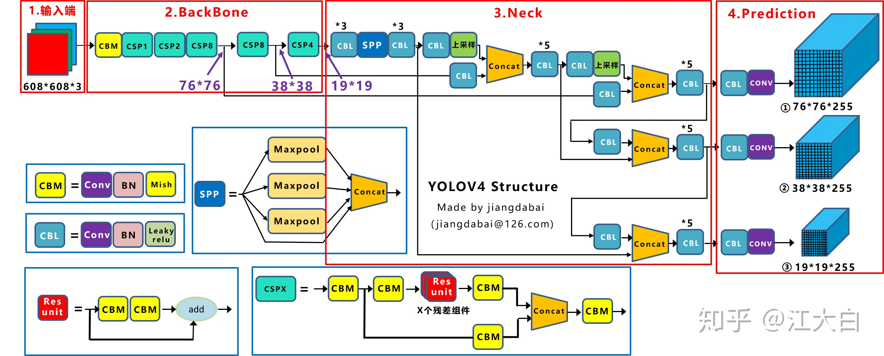
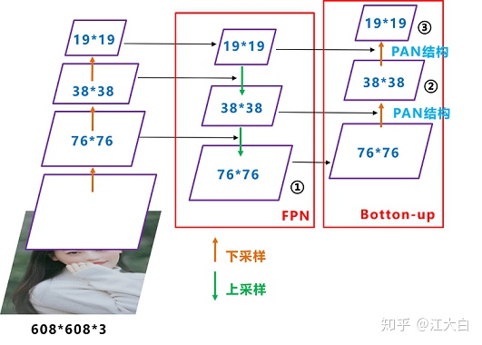

yolo_v4¶
论文地址： YOLOv4: Optimal Speed and Accuracy of Object Detection
网络结构¶

yolov4的五个基本组件
Input¶
Yolov4对训练的输入端进行改进，使得训练在单张GPU上也能有不错的成绩。比如数据增强Mosaic，cmBN，SAT自对抗训练。
Mosaic数据增强¶
yolov4中使用的Mosaic是根据2019年底提出的CutMix数据增强方式，但CutMix只使用了两张图片进行拼接， 而Mosaic数据增强则采用了4张图片，随机缩放、随机裁剪、随机排布的方式进行拼接。
优点
丰富数据集，特别是随机缩放增加了很多小目标，让网络的鲁棒性更好
减少GPU，使得Mini-batch并不需要很大，一个GPU就可以达到比较好的效果
BackBone¶
CSPDarknet53
CSPDarknet53是在Yolov3主干网络Darknet53的基础上，借鉴2019年CSPNet 1 的经验，产生的Backbone结构，其中包含了5个CSP模块。 每个CSP模块前面的卷积核的大小都是3*3，stride=2，因此可以起到下采样的作用。
CSPNet的作者认为推理计算过高的问题是由于网络优化中的梯度信息重复导致的。因此采用CSP模块先将基础层的特征映射划分为两部分，然后通过跨阶段层次结构将它们合并，在减少了计算量的同时可以保证准确率。
优点
增强CNN的学习能力，使得在轻量化的同时保持准确性
降低计算瓶颈
降低内存成本
Mish激活函数
Mish 2 和Leaky_relu激活函数的图形对比如下：

使用CSPDarknet53网络在ImageNet数据集上做图像分类任务，发现使用了Mish激活函数的TOP-1和TOP-5的精度比没有使用时都略高一些，因此主干网络Backbone还是使用Mish激活函数
Dropblock
Yolov4中使用的Dropblock 3，其实和常见网络中的Dropout功能类似，也是缓解过拟合的一种正则化方式。传统的Dropout很简单，即随机删除减少神经元的数量，使网络变得更简单。 Dropblock和Dropout相似，比如下图：
中间Dropout的方式会随机的删减丢弃一些信息，但Dropblock的研究者认为，卷积层对于这种随机丢弃并不敏感，因为卷积层通常是三层连用：卷积+激活+池化层， 池化层本身就是对相邻单元起作用。而且即使随机丢弃，卷积层仍然可以从相邻的激活单元学习到相同的信息。因此，在全连接层上效果很好的Dropout在卷积层上效果并不好。 所以右图Dropblock的研究者则干脆整个局部区域进行删减丢弃。
这种方式其实是借鉴2017年的cutout数据增强的方式，cutout是将输入图像的部分区域清零，而Dropblock则是将Cutout应用到每一个特征图。而且并不是用固定的归零比率，而是在训练时以一个小的比率开始，随着训练过程线性的增加这个比率。
优点
Dropblock的效果优于Cutout
Cutout只能作用于输入层，而Dropblock则是将Cutout应用到网络中的每一个特征图上
Dropblock可以定制各种组合，在训练的不同阶段可以修改删减的概率，从空间层面和时间层面，和Cutout相比都有更精细的改进
Neck¶
在目标检测领域，为了更好的提取融合特征，通常在Backbone和输出层，会插入一些层，这个部分称为Neck。相当于目标检测网络的颈部，也是非常关键的。
Yolov4的Neck结构主要采用了SPP模块、FPN+PAN的方式。
SPP
作者在SPP模块中，使用k={1*1,5*5,9*9,13*13}的最大池化的方式，再将不同尺度的特征图进行Concat操作
注解
这里最大池化采用padding操作，移动的步长为1，比如13×13的输入特征图，使用5×5大小的池化核池化，padding=2，因此池化后的特征图仍然是13×13大小。
采用SPP模块的方式，比单纯的使用k*k最大池化的方式，更有效的增加主干特征的接收范围，显著的分离了最重要的上下文特征。
Yolov4的作者在使用608*608大小的图像进行测试时发现，在COCO目标检测任务中，以0.5%的额外计算代价将AP50增加了2.7%，因此Yolov4中也采用了SPP模块。
FPN+PAN
前面CSPDarknet53中讲到，每个CSP模块前面的卷积核都是3*3大小，步长为2，相当于下采样操作。 因此可以看到三个紫色箭头处的特征图是76*76、38*38、19*19。以及最后Prediction中用于预测的三个特征图：76*76*255，38*38*255，19*19*255。
Neck部分的立体图像，看下两部分是如何通过FPN+PAN结构进行融合的:

Yolov3的FPN层不同，Yolov4在FPN层的后面还添加了一个自底向上的特征金字塔，其中包含两个PAN结构。 这样结合操作，FPN层自顶向下传达强语义特征，而特征金字塔则自底向上传达强定位特征，两两联手，从不同的主干层对不同的检测层进行参数聚合。
注解
Yolov4的FPN层，只使用最后的一个76*76特征图h和经过两次PAN结构输出预测的特征图
yolov3和yolov4 anchor和mask 的对应关系是相反的
Prediction¶
CIOU_loss
目标检测任务的损失函数一般由Classificition Loss（分类损失函数）和Bounding Box Regeression Loss（回归损失函数）两部分构成。
IOU_Loss
IOU的loss其实很简单，主要是交集/并集，但其实也存在两个问题:
GIOU_Loss
因IOU_Loss存在的连个问题，出现了GIOU_Loss来改进
还存在一种不足：
问题：状态1、2、3都是预测框在目标框内部且预测框大小一致的情况，这时预测框和目标框的差集都是相同的，因此这三种状态的GIOU值也都是相同的，这时GIOU退化成了IOU，无法区分相对位置关系。 基于这个问题，2020年的AAAI又提出了DIOU_Loss。
DIOU_Loss
好的目标框回归函数应该考虑三个重要几何因素：重叠面积、中心点距离，长宽比。针对IOU和GIOU存在的问题，作者从两个方面进行考虑：
如何最小化预测框和目标框之间的归一化距离？
如何在预测框和目标框重叠时，回归的更准确？
针对第一个问题，提出了DIOU_Loss（Distance_IOU_Loss）
DIOU_Loss考虑了重叠面积和中心点距离，当目标框包裹预测框的时候，直接度量2个框的距离，因此DIOU_Loss收敛的更快。
但就像前面好的目标框回归函数所说的，没有考虑到长宽比。
针对这个问题，又提出了CIOU_Loss
CIOU_Loss
CIOU_Loss和DIOU_Loss前面的公式都是一样的，不过在此基础上还增加了一个影响因子，将预测框和目标框的长宽比都考虑了进去。
\[CIOU_Loss = 1 - CIOU = 1 - (IOU - \frac{Distance\_2^{2}}{Distance\_C^{2}} - \frac{\nu^{2}}{(1-IOU) + \nu})\]
其中 \(\nu\) 是衡量长宽比一致性的参数：
\[\nu = \frac{4}{\pi^{2}}(arctan\frac{w^{gt}}{h^{gt}} - arctan\frac{w^{\nu}}{h^{\nu}})^{2}\]
这样CIOU_Loss就将目标框回归函数应该考虑三个重要几何因素：重叠面积、中心点距离，长宽比全都考虑进去了。
综合看下各Loss函数的不同点：
IOU_Loss：主要考虑检测框和目标框重叠面积
GIOU_Loss：在IOU的基础上，解决边界框不重合时的问题
DIOU_Loss：在IOU和GIOU的基础上，考虑边界框中心点距离的信息
CIOU_Loss：在DIOU的基础上，考虑边界框宽高比的尺度信息
DIOU_nms
Nms主要用于预测框的筛选，常用的目标检测算法中，一般采用普通的nms的方式，Yolov4则借鉴上面D/CIOU loss的论文 4，将其中计算IOU的部分替换成DIOU的方式：
在上图重叠的摩托车检测中，中间的摩托车因为考虑边界框中心点的位置信息，也可以回归出来。因此在重叠目标的检测中，DIOU_nms的效果优于传统的nms。
为什么不用CIOU_nms，而用DIOU_nms?
因为前面讲到的CIOU_loss，是在DIOU_loss的基础上，添加的影响因子，包含groundtruth标注框的信息，在训练时用于回归。但在测试过程中，并没有groundtruth的信息，不用考虑影响因子，因此直接用DIOU_nms即可。